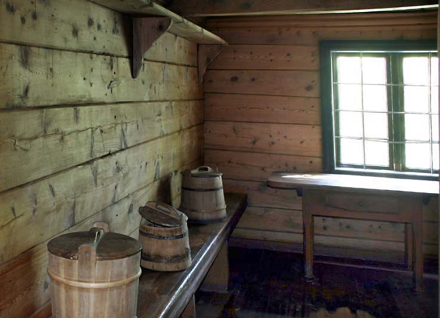
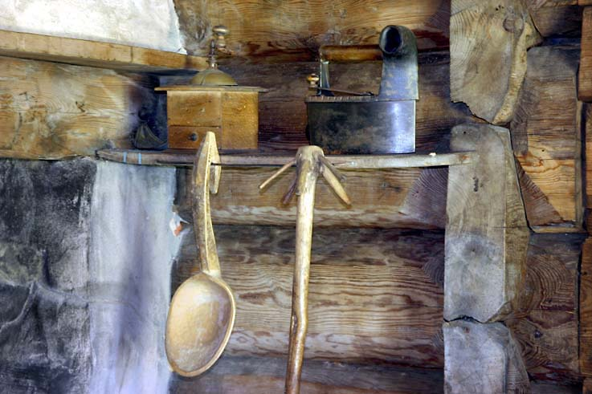
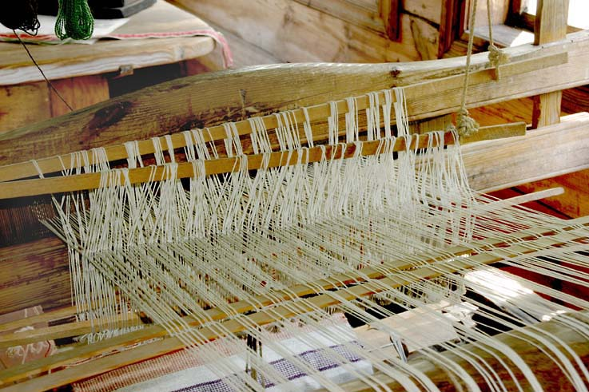
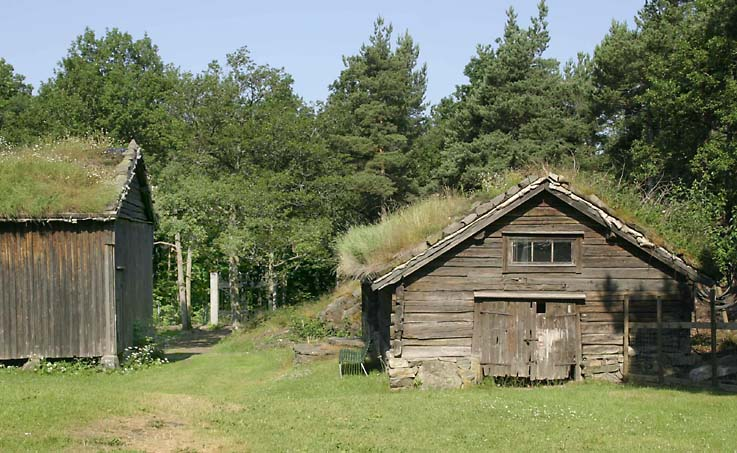

Vest-Agder Fylkesmuseum - Vest-Agder-tunet
Foto: Torvald Slettebø, Universitetet i Agder, Seniorsenteret
Tekst: Fra museets årbok 2001: "Fra hus til hus", merket (hth) og tekst skrevet av Anna Helle Nilsen, merket (AHN) med tillatelse.
Boligen til Vest-Agder-tunet ble bygget i bygget i 1860-årene. Opprinnelig plasssering: Nedre Eiken, Hægebostad komnnune Vest-Agder. Flyttet til museet: 1956.
Vest-Agder-tunet fra Nedre Eiken i Hægebostad består av våningshus, løe, kombinert fjøs og stall samt stabbur. Etter forholdene i indre Vest-Agder var dette en velstående gård, men ikke sammenliknet med de store gårdene på Østlandet. På museet er gården komplettert med en smie, ei rosemalt bu, ei skolestue og ei badstue.
Våningshuset po Vest-Agder-tunet har stående panel og et tak som går lenger ned på baksiden enn mot fasaden. Det hvitmalte setehuset ble oppført i 1869. Fronten var opprinnelig vendt mot innmarka og vannet. Huset er et eksempel på den bygningstypen Eilert Sundt i 1862 beskrev som den mandalske stueform. Huset er skjevt røstet; på baksiden går sidetaket lengre ned enn på forsiden. Det er i to etasjer med hoveddør på forsiden, og med en mindre dør på baksiden, mot gårdstunet. På forsiden flankeres døren av to par vinduer, og i annen etasje er fem vinduer. På baksiden er ett vindu i hver etasje. Den ene sideveggen har fire vinduer og den andre ingen.
Inne er huset delt av en midtgang med trapp og laftet stue på hver side. Disse danner hovedrom i første og annen etasje. I første etasje ble de to rommene innredet som dagligstue og bestestue. I begge rommene er veggfaste senger langs innerveggen. Sengene er oppredd på tradisjonelt vis. Denne "lange innredningen" var vanlig i Vest-Agder. I dagligstuen står et kjellerskap - matskap med lem i gulvet til k jellerrom - mellom sengene, i bestestuen et kanneskap. Både senger og skap er dekorert med treskurd. Begge rommene har også løse møbler: I bestestuen står det bord med stoler, gyngestol og kommode. I dagligstuen er langbordet plassert. Gårdens beboere samlet seg her til måltider og huslige gjøremål. Vuggen til barnet er plassert ved ovnen. At ovnspipene ble lagt til framsiden er et særtrekk ved Vest-Agder-huset, og forekommer ikke noe annet sted i landet. Tømmerveggene i begge rommene er umalte, mens dørene er rosemalte med de første eiernes initialer og årstallet 1869. Midtgangen domineres av den store murte pipen. Bak gangen er det sommerkjøkken med grue og kammers/vinterkjøkken inn til høyre, og på venstre side et uisolert vedskjul. I annen etasje inneholder også de to hovedrommene senger. Det ene rommet ble en tid brukt til omgangsskole. Bak det andre rommet, der veven er satt opp, er tjenestejentas kammers.
(hth)
Anna Helle Nilsen: Eikengarden på Vest-Agder fylkesmuseum – og min oldemor, Gunvor Johnsdatters skjebne.
Eiken-garden på Vest-Agder fylkesmuseum ble flyttet fra Eiken og satt opp igjen på Kongsgård i Kristiansand ca 1960 (årstall usikkert!)
Hovedhuset er i typisk ”indre Vest-Agder-stil”. 1.etasje har midtgang, og ei stue på hver side. Bak er kjøkken med grue, fortsettelse av midtgangen, Det har, som sagt, grue, og i tillegg vindu og dør ut. På den ene siden av kjøkkenet, bak dagligstua, er et rom som da jeg besøkte stedet, ble brukt som kjøkken, men som tidligere kan ha vært et sengekammers. På den andre siden av kjøkkenet er vedskjul. I dagligstua, til høyre for framdøra, er to veggfaste senger med en ”kannestol”, eller skap mellom. I min barndom ble det sagt at i nedreskapet var nedgang til kjelleren. Jeg tør ikke innestå for sannheten. I den andre stua var det også veggfaste senger. Dørene mellom gang og stuer er dekorert, bl.a. med initialene GJE, Gunvor Johnsdatter Eiken, og STE, Søren Tormundson Eiken.
Trapp til 2. etasje går fra midtgangen. Der oppe er det to store rom og to små. Her var amtskolen noen år. Min far, Johan Helle, gikk der, og han fortalte en gang at de holdt sånn leven at ovnen ramlet ned. Ovnene i slike hus stod i hjørnet mellom vindu og dør, med pipe rett opp. I det lille rommet mot nord, bodde min faster Gunvor som tjente der i 34 år, til hun var over 70., og hadde sengeplass i et rom uten ildsted.
Det har aldri vært innlagt elektrisitet i huset. Hvorfor, kommer jeg tilbake til.
De grå og lave uthusene er også flyttet til Museet. I Eiken stod lå gardshusene i skogkanten, mot sør, med jorder ned mot Lygne, og med noen apaler rundt. Det var et svært vakkert sted.
Hva er så min oldemors tilknytning til dette huset ?Hennes livshistorie er noenlunde slik:
Hun ble født 01.04.1841 på Helle i Hægebostad. Hennes foreldre var John Thorstensen Helle f. 1813 – d. 1892 og Randi Knudsdatter Gyberg f.1815 –d. 1870. (De ble viet 17. juni 1835, 22 og 20 år gamle) Hun hadde søsken: Thorsten, f. 20.april 1836, død 23. april samme år. Thorstein, f. 23. nov. 1838, død Knud, f. 1.mars 1845, død 28. feb. 1846 Tosten, f. 19. juni 1847 død 1930 (Konfirmert 1862 med karakter temmelig god) Aasa, f. 18. feb. 1850, død 1859 Farfar til Gunvor Thorsten Johnsen Helle, døde 24. nov. 1844., 68 år gammel. Gunvor stod som nr 1 på kirkegulvet som konfirmant i 1855 med karakter Meget god. Hennes far omtales som gårdbruker og medhjelper. Den 21. juni 1859 (18 år gammel) vies hun i Hægebostad kirke til ungkar og gårdbruker John Johnsen, Øvre Snartemo. Han var født 4. sept.1839, av foreldre John Johnsen d.e. og Ranni Simondtr., og altså nesten 20 år gammel. Han ble konfirmert 1853, først på kirkegulvet, og med karakter Meget god. Den 3. januar 1860 ble deres sønn, min farfar, John, seinere kalt ”Lisle-jo”, født. Den 13. mai samme år (1859) går Gunvors mann i Lygna og drukner. Han finnes igjen 3. juli og begraves. Presten skriver: ”fantes den 3. juli død i elven efterat han i svigtet kjærligheds avslutning den 13.mai antas frivillig -------- for at ----- sin sorg i livet.” (Ifølge Hægebostadboka hette kjæresten Åsa Gyberg) John Johnsen Snartemo d. y., Gunvors første mann, hadde søsken: Simon f.1843 og Sigmund f.1850, d. 1927. Sigmund overtok garden på Snartemo.
Hvordan kom så Gunvor Johnsdatter til Eiken? Den 11.april 1859 ble ungkar og gårdbruker Søren Thormundsen Tveden, f. 1.11. 1837 , med foreldre Thormund Thormundsen og Tobbør Jonsdatter Tveden viet i Eiken kirke. til pige Asbør Olufsdatter Yttre Bryggesaa, 24 år, foreldre Oluf Olsen og Mari Madsdatter. Søren er født på Tveden, men opholder sig på Egen. 6. mai 1859 ble Torborg Sørensdt.. Nedre Egen, født. Hun døde den 22. juli 1861. Den 25. mars 1862 døde Asbør Olufsdtr på Nedre Egen, 27 år gammel. Den 21. mars 1865 gifter enkemand Søren Thormundsen seg med enken Gunvor Jonsdatter. Presten har notert at det er holdt Skifte og intet er til hinder for at Han indlader sig i nyt Ægteskap. De bygger nye hus på Eiken, g.nr.78, b.nr3 og gnr. 77. b.nr 5. våningshus 1869, uthus 1865. Det er 25 da dyrket mark og ? utmark. I 1952 før garden 4 kuer, 2 kalver, hest, 6 sauer, 4 lam. Gunvor og Søren får sammen 7 barn. Bare 2 når voksen alder:
1. Asborg, f. 23.07.1865, døpt 20.08.1865, død 14.04. 1870
2. Thormund, f. 13.08.1868, døpt 08.03. 1869, død 1953
3. Jon, f. 09.03.1870, døpt 18.04.1870, død 09.11,1873
4. Randi, f. 26.02 1872, død 18.03 1876
5. Torborg, f. 1874, død 1942
6. John, f. 01.07.1877, døpt 28.07,1877. død 17.04 1879
7. Anne Sørine f. 12.02 1880, døpt 07.03.1880, død 09.03.1883.
Søren Thormundsen Egen og Tobias Olsen Haaberg druknet den 28. juli 1879 under en Rotur over Lygnevandet. De ble ikke funnet. Gunvor Johnsdatter levde til 1916, tror jeg. Hennes sønn Thormund Sørensen overtok garden 1884. Han ble gift 1893 med Siri Andersdatter Birkeland, f. 29.03.1869 i Hægebostad. De hadde ikke barn. Min faster, Gunvor Johnsen Helle, var tjenestejente hos dem ca 1920-1950. Thormund var svært konservativ. Gamle seder og skikker var fullstendig godt nok, og elektrisitet en vederstyggelighet, som derfor ikke ble lagt inn i huset. Men han hadde noen epletrær utenfor.
Jeg husker tre besøk: Hele familien Johan Helle var der en gang ca 1938. Da overnattet vi i bestestua, men ellers har jeg lite minner. I 1943 syklet min far og jeg fra Birkeland i Hægebostad til et ettermiddagsbesøk. Da husker jeg vi to ble bevertet i bestestua med vafler av grovt mel og hardkokte egg bl.a. Og tante Gunvor bad om at vi måtte ta med beskjed fra henne til søsteren, tante Line, at Gunvor trengte hjelp til å få sydd noen nye klær, for hun hadde ikke ”kyrkjeklær”.
Siste minne er fra våren 1951. Den 3. juni syklet min bror Jostein og jeg opp fra Helle, langs et vidunderlig vakkert Lygne, der heggen blomstret langs strendene. Garden lå vakkert i skogkanten, med enga skrånende nedenfor. Men vi gikk noe deprimert derifra. Hva vi fikk å spise, har jeg glemt, men vi satt nok tosomme i bestestua. Tante Gunvor strevde med fjøset, hennes rygg var blitt som et hjul av alle de tunge løft. Grandtante Siri satt inne i det lille kjøkkenet og strevde med å spise noen poteter. Thormund, liten og innskrumpet, i sine grå vadmelsklær, hadde plassert seg på skorsteinkanten,, og på sin gamle eikendialekt mælte han: ”No, Anna, korleis trur du det gjenge med krigen i Korea?”. Selv om dette var midt i denne krigens tid, føltes bemerkningen någet malplassert. Men det viste at mannen i sin alder fulgte med. Like etter hentet min farbror tante Gunvor hjem til Helle, og det varte ikke lenge før de gamle falt bort.
Torborg Sørensdatter ble gift med Johan Olsen Snartemo og ble boende i Konsmo: De fikk disse barn:
Johanne, f. 20.05.1895 (Død i Seattle ca 1991)- En datter (Kilde: Kjell Gislefoss)John Selmer f. 12.04.1903
Gunvor, f. 05.09. 1905
Ragnhild Karoline, f. 20.05. 1907
Solveig, f. 24.06.1909 (Død Høigilt, Birkenes 1999)
Søren, f. 06.12. 1912 (Overtok garden i Konsmo)
Trygve Johan f. 23.05. 1916.
(Trygve overtok Eiken etter morbroren og solgte husene til Vest-Agder Fylkesmuseum)
Han solgte straks etterpå garden og flyttet tilbake til Konsmo
Interiør fra bestestua, mot sydvest. De gamle sengene og kannestolen, men kommoden og der andre møblene er av nyere dato. (AHN)
Kom det gjester til gards, ble de bevertet i bestestua. Vertskapet serverte, men satt ikke med til bords. Men bildet på veggen viser Thormund og Siri på biltur. (AHN)
Snekkerarbeidet er vakkert utført. Legg også merke til skrivepulten! (AHN)
Det ble aldri lagt inn noe elektrisk lys i det huset. (AHN)
Stolen har kanskje tilhørt en av forfedrene. Bevertningen var helst gammel ”Eikenkost”, som lefse, i nyere tid vafler, stekt i grua. (AHN)
Det er usikkert om vevnadene ble laget i huset. Der er både prydtepper og mer hverdagslige bolstrer, pluss kvitsøm. (AHN)
Ovnen står på den plassen som var vanlig i hus med denne formen, i hjørnet mellom mellomgangen og ytterveggen. Ovnen stod oftest på en tresokkel, eller noe tryggere, på en mursteinsmur. Pipa gikk rett opp gjennom 2.etasje, og hadde ofte en noe skrøpelig utforming på taket. (AHN)
Dørbladet er vakkert dekorert med initialene til byggherrene: Søren Thormundsen Eiken (Dengang sikkert ”Egen”) og Gunvor Johnsdatter Eiken og byggeåret 1869. (AHN)
Fra ”vinterkjøkkenet” mot nordøst, med diverse laggede butter. (AHN)
En lagget butt, antakelig brukt til salting av matvarer. Tidligere var ”jurene” laget av tre, helst hassel, så dette er nok en yngre utgave med jern- eller sink- jurer. (AHN)
Her har vi ei hjemmelaget potetkvern og ei smørkinne. (AHN)
Ei diger hjemmelaget sleiv, og ei tvare til å røre i grauten med. På hylla over er kjøpt kaffekvern og et strykejern. (AHN)
Til venstre har vi bakstehelle. Ei jerngryte henger i ”skåra”, et vaffeljern ligger på et brannjern. En kobberkaffekjele og enda ei gryte har fått plass på hvert sitt brannjern. Grua står i midtgangen, og tar stor plass. Det er dør inn også den veien, og vedskjulet er i det nordvestre hjørnet på huset. (AHN)
Til venstre i grua ligger ei lita handkvern. Det er tvilsomt at den var i bruk på den tida. (AHN)
Her ser vi igjen den tradisjonelle hjørneovnen, denne gang i dagligstua. På benken bak tok gjerne huset mannfolk et strekk, lunt og godt. Vogga var nok ikke i bruk de fleste år i det huset. (AHN)
Husfolket hadde aldri radio, men de fulgte med i avis og blad, kan vi se av hengemappen på\ veggen. (AHN)
Fem av de sju barna som Gunvor Johnsdatter fødte i dette huset, døde som små. (AHN)
Døra fra dagligstua ut til midtgangen, er dekorert med byggherrenes initialer. Vevnadene er fargeglade og sengestedene korte. (AHN)
Legg merke til dørlåsen, og at dørkarmen også har fått litt maling. (AHN)
Trappa opp til 2. etasje er svært bratt og ingen pryd. (AHN)
Detalj fra byggemåten. (AHN)
Inn mot loftsrommet mot sydvest. Her holdt amtsskolekursene til noen år. Det er gjort forsøk på å dekorere døra. (AHN)
Noen gamle skolesaker er lagt ut på bordet, bl.a. tavler. (AHN)
Vaskeservant med emaljert vaskestell. Det er nok ikke fra Gunvors tid. Ovnsrøret fra bestestua går videre over taket. (AHN)
Utsyn fra det andre loftsrommet over gangen og inn i ”skolerommet". (AHN)
Døra ser ut til å være yngre enn huset. (AHN)
Spinnerokken er vakkert dekorert. (AHN)

Rokken har mange nydelige detaljer. (AHN)
Langbordet er et stasmøbel. Vevgangen er et bruksmøbel og ble flittig brukt. (AHN)
Veven er klar til bruk. Bak vevgangen ser vi ovnspipa fra dagligstua. (AHN)

Det ble nok brukt mye plantefarget garn i prydvevnad. (AHN)
Detalj fra vevingen. (AHN)
Her ser vi forskjellige stadier av lingarntilberedning. Lengst borte står en liten bandvev. (AHN)

Nærbilde av linfibre. (AHN)

Nærbilde av linstrå. (AHN)
Bandveving med lin. (AHN)
Den slitte loftdtrappa sett fra oven. (AHN)
Bygget i Holum, Mandal i 1880-årene.
Flyttet til museet i 1969.
Skolestuene i andre halvdel av 1800-tallet hadde et ensartet preg. Denne kommer opprinnelig fra Holum. Huset er laftet av furutømmer og bordkledd utvendig med stående panel. Veggene er hvitmalte med tre fag høye vinduer og en enkel dør på den ene langsiden. Høyt oppe på hver gavlvegg er det også et stort vindu. Taket har røde takstein. Døren fører inn til en stor yttergang, og til venstre for denne ligger det store klasserommet med åtte dobbelte pulter, kateter og en kombinert skap/bokhylle til skolemateriale. Bak kateteret finnes en stor kuleramme og en tavle. Ved inngangen til klasserommet står en stor jernovn. Tømmerveggene er malt lyse grønne og gulvet brunt. Yttergangen har bare bordkledde vegger. Herfra fører en trapp opp til et uinnredet loft. Denne stua er typisk for landets bygdeskoler i andre halvdel av 1800-tallet.
(hth)
Innredningen med pulter og kateter viser skolesituasjonen for lærer og elever rundt århundreskifte 1800-1900 . Elevene satt på tomannspulter hvor bord og stol var fastmontert på en ramme. Foran på bordet var en fordypning til blekkhuset. Fra kateteret hadde læreren full oversikt og var enerådende i klasserommet. Disiplinen kunne være hard. Bruk av spanskrøret var et ikke ukjent fenomen. På skolen fikk elevene lære å lese, skrive og regne som i dag, men hjelpemidlene var atskillig enklere. Skriveboken var en tavle med griffel til å skrive med. Pedagogikken var også enkel, og elevene måtte lære lange stykker fra Bibelen og katekismen utenat.
(hth)
En ny lov for folkeskolen kom i 1860. Den krevde egne skolehus, lengre skoleundervisning og høyere lærerlønninger. Nå skulle man bort fra den tidligere ordningen med omgangsskoler på gårdene. Hele landet skulle deles inn i skolekretser. Var det mer enn 30 barn i grendelaget, krevde det et skolehus. Skolene ble endelte og todelte, alt etter undervisningsformen. På «enbølte» skoler gikk alle elevene sammen fra sju til tretten år, i hele tolv uker. På todelte skoler fikk de yngste og eldste elevene undervisning hver for seg i ni uker. Interiør fra skolestua slik det kan ha sett ut i tiden omkring 1900.
(hth)
Kulerammen, datamaskinens forløper. ( -Torvald Slettebø)
Denne husformen var typisk for større hus i indre Vest-Agder ca 1850-1870. Da huset stod i Eiken, lå det i en slak bakke mot syd, her er bakken omvendt. (AHN)
Stabburet til Vest-Agdertunet ble bygget i 1800-årene. Oppreinnelig plassering Nedre Eiken, Hægebostad. Flyttet til museet 1956. Stolpehuset eller buret er rekonstruert mye. (AHN)
Det rødmalte stabburet er stort og kunne romme et rikholdig utvalg av tørket, saltet og røket kjøtt og fisk. Det står på seks eikestolper. Trappa er plassert et godt stykke fra døra slik at mus og rotter ikke skulle kunne komme inn. Inne i stabburet er ei stor kiste til oppbevaring av tresket, umalt korn. Der er også store meltønner, kiste til lefser, flatbrødskap og øltønner. I stabburet ble del tidligere lagret tørket, saltet og røkt kjøtt, flatbrød, lefser og øl. Nå har museet plassert ski, skøyter, seletøy og redskaper i buret. I annen etasje ble klær og tepper oppbevart. En del ble plassert i rosemalte kister. I dag er kista flyttet ned i 1. etasje.
(hth)
Stolpene som buret står på,er konstruert slik at rotter og mus ikke skal kunne ta seg opp og inn. (AHN)
De gamle uthusene, sagt å være et par år eldre enn våningshuset, står i forhold til hverandre slik de sto i Eiken. (AHN)
Løa og fjøs til Vest-Agdertunet: Løe til venstre, fjøset til høyre. Løa ble bvgget 1865. Opprinnelig plassering Nedre Eiken, Hægebostad. Flyttet til museet 1956.
Det var ikke vanlig å male uthusbygninger. Etter noen år fikk den en fin sølvaktig farge. Løa har tredelt grunnplan etter tradisjonelt mønster. I midten er treskelåven, der gulvet tnåtte være glatt og tett for at kornet ikke skulle gå til spille. På høyre side er høyløa og på venstre side er kornløa. Der ble kornnekene lagret før treskingen. Løa ble oppført i 1865. Våningshuset har teglstein, mens løa og de andre uthusene har tradisjonell taktekking av never og torv.
Gårdens beboere. Fra 1859 fram til flyttingen 11957 var tre generasjoner eiere av gården: Den første eieren, Søren Thormundsson, var i ungdommen skomaker. Ca. 1858 giftet han seg med Asbord Bryggesaa. De kjøpte i 1859 halvparten av gårdsbruket uten bygninger, og gikk straks i gang med husbygging. I 1865 ble Søren enkemann, og giftet seg på nytt med Gunvor Jonsdatter to år senere. Hun var enke med en liten sønn, som ble boende hos sine besteforeldre da moren giftet seg på nytt. Gunvor og Søren fikk to barn: Tormund (f. 1868) og Torborg. Sommeren 1879 døde Søren i en drukningsulykke. Sønnen Tormund overtok gården etter å ha vært noen år i Amerika. 1 1893 giftet han seg med Siri Anderdatter Birkeland. De fikk ingen barn. Torborg, derimot, fikk mange barn, og den yngste sønnen, Trygve, overtok gården ca. 1952.
Det var Trygve Eiken som i 1956 solgte de gamle husene på Eiken-gården til Vest-Agder Fylkesmuseum. Sommeren året etter ble bygningene flyttet til Kristiansand. De ble satt opp slik at den opprinnelige tunskipnaden ble bevart. En god del av inventaret fulgte med på kjøpet, slik at rommene kunne møbleres slik som de var da gården stod i Eiken.
(hth)
Fjøset.
Fjøset med stall, til Vest-Agdertunet, bygget i 1956. Opprinnelig plassering Nedre Eiken, Hægebostad. Flyttet til museet 1956
Fjøset står på en solid steinmur. Det er delt i kufjøs, hestestall og sauefjøs. Båsene er små og smale. Der er luker i gulvet (i motsetning til i Setesdalstunets fjøs), slik at gjødselen kunne skuffes ned i gjødselkjelleren. Tidligere ble gjødselen ofte bare lempet utenfor fjøset, der den ble ødelagt av vind og vær. Gjødselkjelleren bevrte gjødselen bedre så den senere kunne bli brukt på innmarka. Fjøset med stall ble oppført i 1865.
Flere steder i Vest-Agder blir fjøset kalt flor: Ordet er gammelnorsk og betyr gulvet mellom båsrekkene. Det er det samme ordet engelsmennene har i floor som jo nettopp betyr gulv.
(hth)

Ved flytting av gamle tømmerbygninger, må hver stokk merkes, for å komme på riktigplass. Ved byggingen far hver stokk individuelt tilpasset stokken under. (TS)
Tonstadbua
Den rosemalte Tonstadbua, bygget: 1700-1750. Opprinnelig plassering: Tonstad østre, gnr. 50 og bnr. 9, Sirdal kommune. Flyttet til museet: 1967
Ferjebua fra Sirdal har nå et eksteriør som forteller lite om hva bygningen inneholder. Tonstadbua ble satt opp på 1700-tallet med ett stort oppholdsrom uten forgang. Den sto da på bruket Monen i Sirdal kommune. Huset var i laftet furutømmer, uten bordkledning, flat-telgjet innvendig og trolig med bare et enkelt vindu. De nåværende vinduene er antakelig fra første del av 1800-tallet. Himlingen er hvitmalt med synlige bjelker og overliggende panel. Den brede døråpningen inn til hovedrommet er av nyere dato. Taket har røde takstein.
Den nåværende yttergangen med trapp opp til annen etasje og til kammerset er kommet til senere. Tidligere var det vanlig med svalgang på matbuene og sengebuene i Vest-Agder. Det er derfor ikke så usannsynlig at det kan ha vært en svalgang her med trapp opp til sengekammerset. Huset har nå stående tømmermannspanel utvendig og er hvitmalt. Bordkledningen og den hvite fargen er antakelig fra 1900-tallet.
Rosemalingene i Tonstadbua er blant de eldste og beste vi har i Vest-Agder. Innvendig er det hovedrommets veggdekor som er interessant. Rosemalingen er den eldste profanmaling vi kjenner i Vest-Agder. Den ble malt av Tore Asbjørnsen Risøyne fra Fjotland i 1780 da han bare var 18 år gammel. Tore var selvlært som rosemaler. I 1791 dekorerte han Grindheim kirke.
Veggdekoren er delt i tre horisontale felt med en rødfarget brystning nederst og en blomsterranke øverst. Mellom disse består dekorasjonen av figurmotiver atskilt av vegetabilske ornamenter. Motivene er hentet fra kjente beretninger i Bibelen og et folkelig billedmotiv: David og Goliat, Absalon som hang fast etter håret, Samson og løven, Samson og de to speidere, de fem kloke og de fem dårlige jomfruer. Under hver figurfremstilling står en bibeltekst og en henvisning til skriftstedet. Til slutt malte Risøyne de tre stendene: offiseren, presten og bonden med en sosial kommentar: Jeg Strider for Eder, sier adelsmannen, Jeg Beder for Eder, sier presten, Men jeg opholder Dykke adde same, sier bonden på dialekt!
Tonstadbuas mangfoldige historie. Etter tradisjonen skal Tonstadbua først ha fungert som ei sengebu for reisende med båt på Sirdalsvannet, altså en slags ferjestue. Det var gjestgiver Karl Torjeison (1723-1800) som fikk bygget bua. I 1753 hadde han fått gjestgiverbevilling med skjenkerett. Karl hadde trolig god råd, og i 1780 ga han Tore Risøyne i oppdrag å dekorere veggene innvendig etter tidens smak. Etter den tid har rommet kanskje også vært benyttet til gjestebud og andre sosiale formål. I 1870 ble Tonstadbua flyttet og fikk andre funksjoner.
Om de senere brukere og eiere: Salve Karlson (1760-1840) hadde som gjestgiver to føringsbåter på Sirdalsvannet. Bua fungerte både som venterom for båtpassasjerer og til overnatting med enkle senger i annen etasje. Karl Salvesen Tonstad (1804-1878), drev i noen år også et bøkkerverksted i bua. Sigbjørn Karlson Tonstad (1837-1903), overtok «Tonstadbua» på en auksjon i 1870. Den ble like etter revet og lagret før den ble gjenoppført på hans gård i Tonstad sentrum. Dette var før 1880. Samtidig ble det bygd kjeller med en romslig bakerovn under huset og startet bakeri med brødutsalg oppe. På 1890-tallet drev hans datter Karen Tonetta (1877-1952) landhandel i huset før hun flyttet over til det gamle meieriet.
(hth)
Andre bygninger på Vest-Agder-tunet uten bilder:
Smie fra Birkeland, bygget på slutten av 1800-tallet. Opprinnelig plassering: Birkeland i Marnardal kommune. FI yttet til museet 2001 - 2002. Smia skal bli satt opp på museumsområdet i løpet av somrene 2002-2003. Smia er satt opp i enkel bindingsverkskonstruksjon og panelt med vertikale bord. Taket er dekket med spon. 1 andre halvdel av 1800-tallet og på begynnelsen av 1900-tallet, var det vanlig med denne takdekkingen på enklere bygninger i indre Vest-Agder. Inne i bygninger er det innredet en komplett smie med esse, belg og benk med verktøy og utstyr. Det var smie på de fleste gårder. Bonden måtte ved siden av mange andre ferdigheter også være smed. Det var imidlertid enklere smedarbeider bonden utførte. Innviklede gjenstander som låser og dørbeslag ble som regel utført av en bygdesmed.
Badstuer i Vigmostad I bygdeboka for Vigmostad blir det fortalt om badstuene: Då badstovene kom av bruk, blei desse små husa nytta til korntørking og malttørking. Dei laga då tette benkar som dei la kornet på i tynne lag. Skinnfellar og andre sengeklede hadde dei og til badstovene for å få dei reine for utøy. Dei heta då opp badstova så varm at utøyet måtte kovna.
Det var badstove på kvar garden. På Vigmostad var det fleire. På Flegevodden sto det ei, og i Bronebakken står badstova ennå. Der Knud Persons verkstad står, var det to. Dei fortel at to-tre gjenter frå «Der Framme» hadde vore i ei av desse badstovene med sengeklede, og så kledde dei heilt av seg sjøl for ikkje å få utøy med seg heim att. Dei hoppa då over bekken og sprang så fort dei kunne og smatt inn att heim.
(hth)